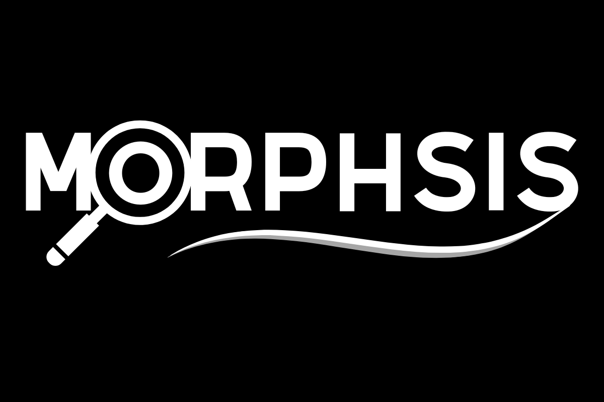

Microstructure analysis
MORPHSIS
Quantitative microstructure analysis and explainable image segmentation.
- Porosity and feature quantification
- Coating thickness measurement
- Rule-based segmentation workflows
- Transparent image analysis for research outputs